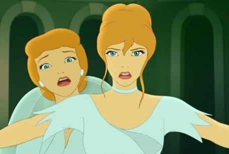
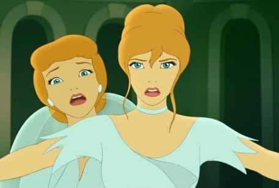

Cinderella
 
Cinderella III: A Twist in Time is the second direct-to-video sequel to the 1950 Walt Disney Pictures animated classic Cinderella.

Cinderella III: A Twist in Time is the second direct-to-video sequel to the 1950 Walt Disney Pictures animated classic Cinderella.
Canonically it is a continuation of the original Cinderella, rather than Cinderella II: Dreams Come True, though due to its unusual
chronological sequencing it acknowledges the events of Cinderella II: Dreams Come True by using some of its characters. The film
was released on February 6, 2007 and was directed by Frank Nissen and features the voices of Jennifer Hale and Susanne Blakeslee.
For the UK release of the film, it was simply titled Cinderella: A Twist in Time, without mention of it being a sequel. It made its
world television premiere on Toon Disney on December 3, 2007.